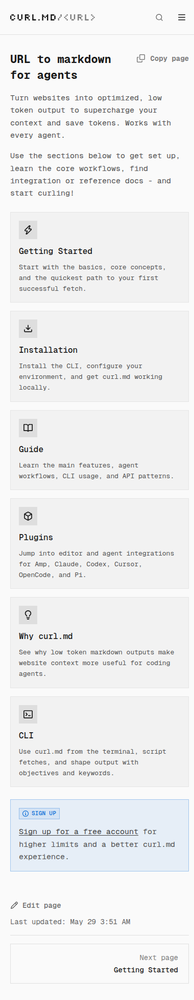

把网页压成低 token Markdown，curl.md 让 Agent 直接读网页
它不是“又一个浏览器插件”，而是一层面向 agent 的网页转 Markdown 中间件：同一个 URL 可以走浏览器、CLI、插件或 API/SDK，最终都变成更省上下文的内容供编码代理直接消费。
它特别适合需要频繁读文档、网页、说明页和参考资料的工作流：先把内容转成 markdown，再送进编码代理或脚本链路，避免把上下文预算浪费在原始 HTML 和视觉噪音上。
首页首屏最能代表它的视觉锚点
大标题、Copy 按钮、入口卡片和“tokens saved”实时指标，构成了这个工具的最短说明路径。

来源：curl.md 首页截图。页面没有花哨大图，靠标题 + 复制按钮 + 文档入口建立工具信号，非常适合做成“工具介绍型”卡片的视觉锚点。
不是浏览器替代品，而是上下文净化层
它的角色不是“再给你一个浏览器”，而是把网页内容压成 Markdown，让后面的 agent、脚本或插件吃更干净的输入。
- 减少 HTML 噪音
- 减少手动复制粘贴
- 减少 token 浪费
它优化的是“可消化性”
官网直接写明 low token output / supercharge your context，说明它关心的不是原样复刻网页，而是让 agent 更快进入有效上下文。
- 网页 → markdown
- 正文优先，视觉次之
- 适合再加工
适配面很广，但入口不止一种
首页和文档把入口拆成浏览器、CLI、plugins、API/SDK 四条线，不同工作流各走各的最短路径。
- 浏览器直接开用
- CLI 适合脚本链路
- 插件适合编辑器 / agent
最短可用命令
官方安装页直接给出这个命令，说明它默认把 CLI 作为最通用的入口。对于自动化、脚本和 agent pipe 来说，这是最省步骤的方式。
- 也支持 npm / bun 安装
- 适合 shell、脚本、批量抓取
- 直接对 URL 前缀化使用
不同工作流对应该怎么接
文档里的结构很清楚：Getting Started → Installation → Guide → Plugins → Why curl.md → CLI。对于技术分享卡来说，这意味着它不是一个单点功能，而是一套“从入门到集成”的完整工具链。
把网页变成可引用资料
适合把文档、产品说明、FAQ、博客和教程压成更干净的文字，再喂给总结、问答或笔记工作流。
减少页面噪声，保留可检索的主体信息。
给 agent 喂上下文
官网自己写了 “works with every agent”，并把 Amp、Claude、Codex、Cursor、OpenCode、Pi 列成兼容对象。
说明它主要服务的是 agent 使用场景，而不是纯人工阅读。
让脚本替你扫网页
CLI + URL 前缀的组合，适合放进 shell、CI、采集脚本或自动化管线里做批量处理。
比手动复制网页内容更适合重复工作。
减少上下文爆炸
对长文档来说，先抽成 markdown 再处理，往往比直接把 HTML 丢给模型更省 token、更稳。
对上下文预算紧张的工作流特别有用。
高额度需要更完整的使用方式
首页明确提示 sign in 可以获得 higher limits。也就是说，免费体验能用，但高频场景要接受账号与额度管理。
并不替代浏览器本身
如果你要处理强交互页面、登录后态或复杂可视布局，仍然需要浏览器；curl.md 更适合把结果压缩成可消费文本。
它优化的是文本，不是视觉
信息卡里最重要的判断是：它的强项是 markdown/context，而不是还原网页原始视觉。别把这两个目标混在一起。
| 能力 | 适合 | 不适合 |
|---|---|---|
| 网页转 markdown | 文档、博客、FAQ、说明页 | 强交互、登录态强依赖页面 |
| CLI / 脚本 | 自动化、批量采集、agent pipe | 只想临时看一眼页面的人 |
| 插件 / API | 编辑器内工作流、程序化接入 | 不愿意做任何配置的人 |
如果你的目标是“把网页内容快速变成 agent 可用上下文”，它很合适；如果目标是“完美还原视觉或交互”，那它不是主工具。
infocard-hardblue-style · 工具分享卡 · 来源：curl.md 首页 / Installation / FAQ / GitHub · 已按硬核蓝手册重排